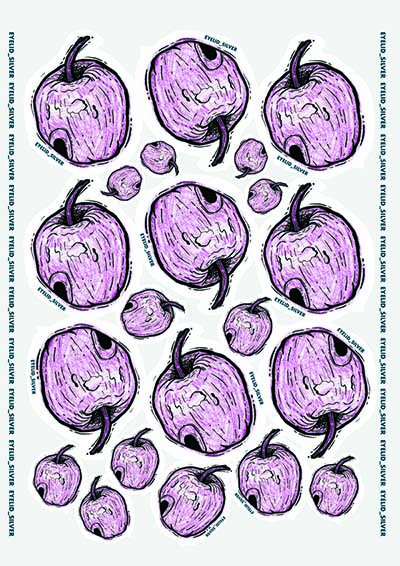

Stickers are very widely used when an object requires identification with a word or idea. Brand stickers may be attached to products to label these products as coming from a certain company. They may also be used to describe characteristics of the products that would not be obvious from simple examination. A label dispenser is often used as a convenient way to separate the sticky label from its liner or backing tape.
